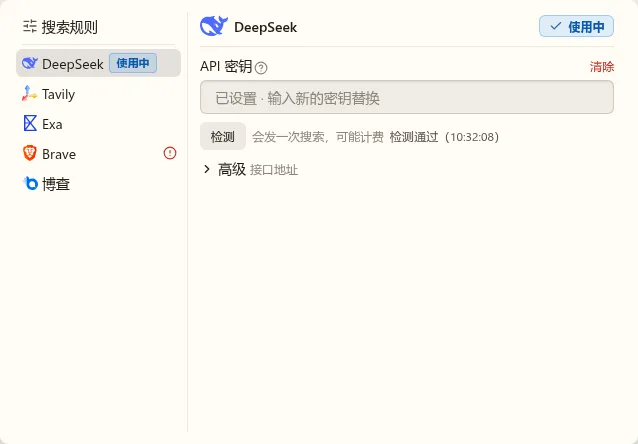
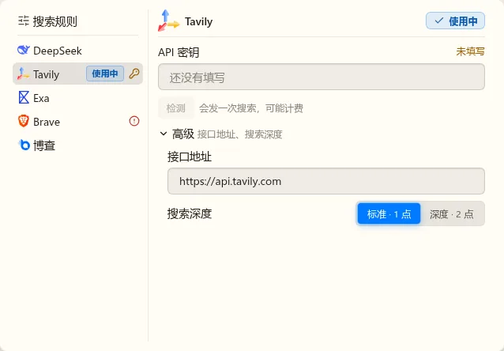
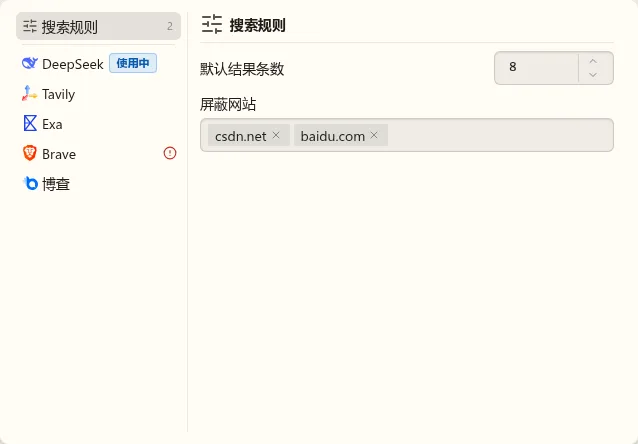
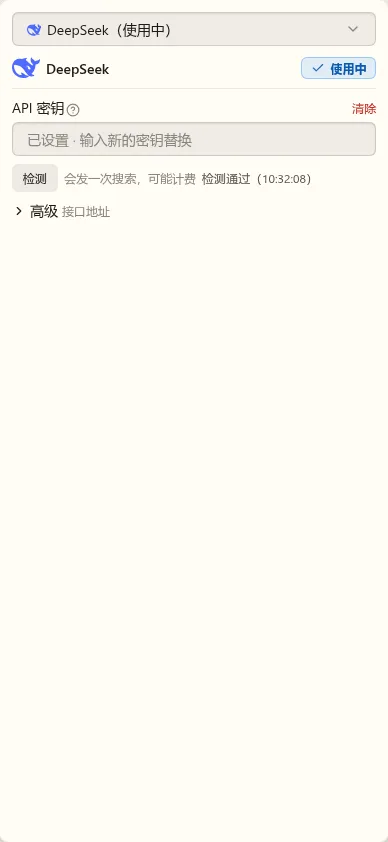
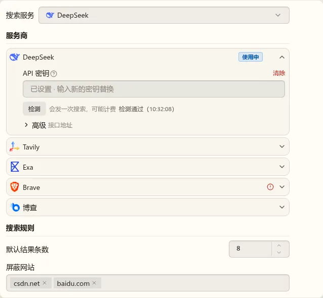
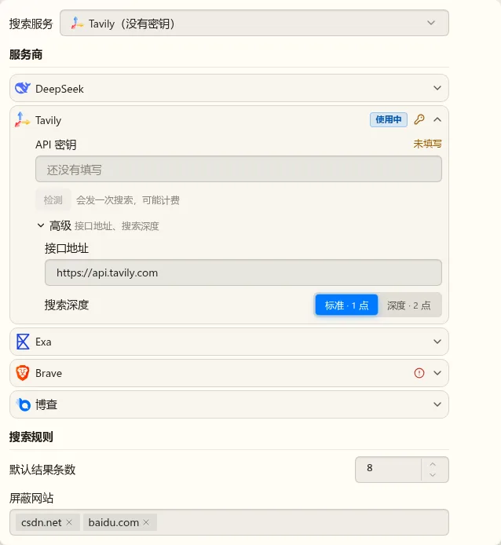
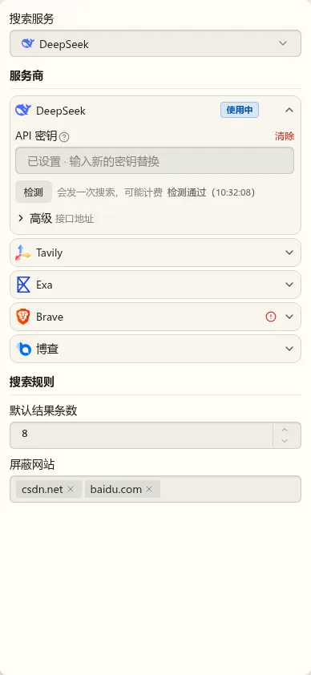
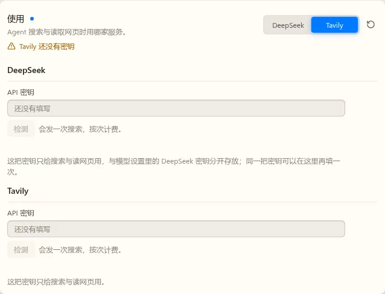

第 1 轮：搜索与网页设置页的版式
服务商变多以后，这一页按 A 还是 B 排？
推荐 A：家数多了页面也不变长，和隔壁“服务商与模型”页一个排法。
A 左边列表、右边详情

选了 Tavily、它还没有密钥（高级展开）

搜索规则

390 宽

- 看哪家和用哪家分开：点左栏只是看，“设为使用中”在详情标题区
- 五家与十家一样高
B 下拉加可折叠卡片

选了 Tavily、它还没有密钥（卡片与高级展开）

390 宽

- 一页看全，结构简单
- 服务商在下拉与卡片里各出现一次；卡片展开会把下面的“搜索规则”推下去
把一家还没填密钥的设为使用中，怎么办？
推荐“先填密钥再切”：正在用的那家照常工作，写到一半不会因为点错而搜不了。
先填密钥再切
点设为使用中 → 不切，焦点进这家的密钥框，密钥行右边写填写密钥后即可启用 → 填好保存后自动切过去
- 原来那家在填好之前一直在用
- 一家都还没有密钥时（第一次配置）照常切，等填
照切，提示补密钥
点设为使用中 → 立刻切过去 → 左栏这家行尾黄钥匙、密钥行写未填写（上面 A 的第二张图）
- 规则最简单
- 填好之前 Agent 搜索都报“没有密钥”
直接修，不用答
| 哪里 | 改成什么 |
|---|---|
| 使用中的标记 | 写“使用中”徽标，不用蓝点（设置行的“已修改”就是蓝点） |
| 没填密钥的服务商 | 没在用的不挂警告；只有使用中的那家没密钥才挂黄钥匙 |
| 每家底下的说明句 | 删掉；DeepSeek 的“与模型设置里的密钥分开保存”收进密钥旁的问号 |
| 检测旁的提示 | “会发一次搜索，按次计费。”改成“会发一次搜索，可能计费” |
| 检测结果 | 写在检测按钮同一行，出现与消失不推动下面的内容 |
| Tavily 搜索深度 | 放进这家的“高级”，两档写“标准 · 1 点”“深度 · 2 点” |
| 接口地址 | 每家的“高级”里，和模型页一样 |
| 两项通用设置 | 叫“搜索规则”：默认结果条数、屏蔽网站（A 放左栏顶上，B 放页面最下面） |
现在的页面

已定
- 加四项设置：每家的接口地址、默认结果条数、屏蔽网站、Tavily 搜索深度（会话里定）
- 服务商带 logo（lobehub 图标包，模型页同一套）